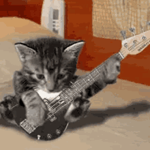
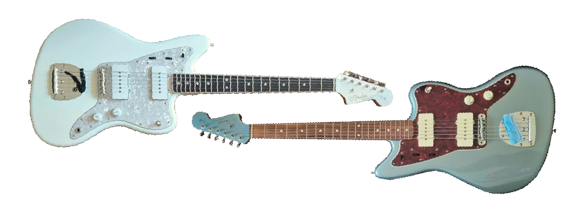
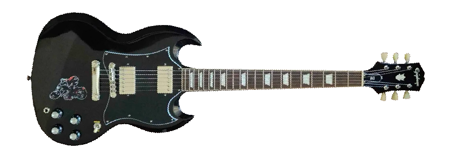
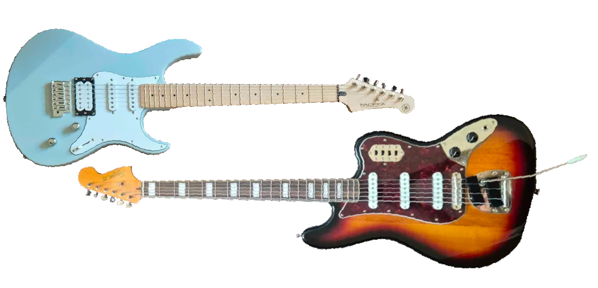

welcome to my blog #blog
#2 - 07/01/26 - madkitty's guide to guitars (and what ones i use)
i've been playing guitar since i was at least 7 (i'm 22 now), but didn't really get into it seriously until i was 17 and started listening to a lot more rock (and later on metal). personally my true love is the electric guitar! conceptually they're very simple, just tension a metal string over a bunch of coiled copper wire and shove the resulting output into a speaker. obviously there's a lot more nuance but idgaf really; wikipedia has me covered for more in-depth info.
my electric guitaring started as i desperately wanted to sound like tame impala or king gizzard, but then as i got older i moved onto heavier, less psych-rocky stuff. i still love the sound i first sought to recreate but ya now i want to be deftones 2...
for madkitty!! stuff i don't use guitars (just ma puter mostly (now i think about it i defs tracked some distorted bass atop the bassline for FACTOR THIS)), but i use them extensively with Raingardens. i'm definitely more of a rhythm guitarist than anything and have never learnt to solo properly but whatever.
anyway here are the guitars i use and love and adore and then the ones i am ambivalent towards :DDD do not judge me for my playing.... i am not actually a very good guitarist at all
my jazzmasters!!
i am a big fan of the jazzmaster, so much so that i have two of them!! one is blue and one is white. otherwise they are basically identical
my white jazzmaster is my main guitar, easily. it's a 2024 (or 2025 i can't remember) japanese custom shop one that cost me FAR too much to purchase + import to australia but it's super good so idc. this one is my baby my joy my love, strung with 9.5-44 gauge strings (i think? whatever primo slinkys are i love them), so i tend to play it around E standard (well sort of i mostly play in drop D but yeah anything around this pitch really. more info on tunings here). it's beautiful and i love it dearly and if this guitar has no fans left i am dead

audio demo of my white jazzmaster, tuned EADF#Be (E standard with the G tuned down a semitone), just messin around...
my blue one was the first electric i ever got, a 2020 vintera jazzmaster of some description, and currently it has 12-56 gauge strings on it to allow for downtuning to drop A# (the low A# is still a bit floppy at tension cuz jazzmaster scale length + string gauge i chose not really ideal for drop A# but like whatever i work around it).
i mostly use this stuff for chuggier or heavier or dark shoegazey sounds (i'm in a band with a few friends of mine where we mostly play that stuff, à la deftones, superheaven etc) and ya i know that jazzmaster single coil pickups aren't the meta for this but fuck you i don't care it sounds good
blue jazzmaster, tuned drop A#! sorry if it sounds muddy but that's the sound i like teehee
ya basically these are really versatile! i've never really felt the need to get a strat or tele or any other fenders coz i feel like my use case only really calls for jazzmasters. these two guitars are the ones i play most regularly and i never intend on getting rid of them.!
you can hear a fleshed-out track with the blue jazzmaster here, if you're interested... i am very proud of this one!
i do have other guitars tho....
the shadow g
one of the first guitars i got after my blue jazzmaster was a black epiphone sg. i bought it cuz it was cool! i am very simple. it was my primary "metal" guitar for ages (i stuck fat strings on it) but with its 24" scale and with me purchasing other guitars eventually it was restored to a faithful higher tuned, 9.5 gauge, double humbucker setup. it tends to float anywhere between E standard and drop C#, and it's called the shadow g simply as i put a hard sticker of shadow the hedgehog on it.
shadow g in drop c#, deftones song as da demo. you can clearly hear in the second part i defs need thicker gauge strings if i'm to keep it in drop c# as hitting the open c# really fucks with the pitch
my two other electric guitars
these two guitars i don't really play super often but they have their uses!
i own an ice blue pacifica which i bought new for like $400aud (which is pretty cheap for a guitar!) mostly as something to fuck with and maybe mod. i've yet to get around to modding it but i slapped some fat 13 gauge strings on there as an experiment and it can kinda function with them and only SOMETIMES does the low A# slip off the nut, mostly if i'm just strumming too hard. its tuning stability is so shit i've relegated it to perma live in drop A#. i don't play it much because i have my blue jazzmaster :3
no audio demo because i made this post on a 42 degree day and the guitar was so out of tune (metal strings expanding) and its tuning stability is so shit i couldn't be bothered getting it in tune for 5 mins
i do still wanna mod it one day, give it new tuners for better stability and repaint the body maybe with a fun design (shadow g 2? shadow pacifica?), maybe swap the pickups out but i can't be bovvered atp
the other one is a squier bass vi which i bought because i was obessed with loathe at the time (and still am). it's got a long scale length (30" versus the standard 24" or 25.5") allowing for lower tunings. usually it's tuned to E standard, just an octave down, but i put some slightly thinner strings on it so that i can have A# standard on the highest 5 strings, and then a low F (sometimes dropped to D# if i'm feeling crazy). once again it's got such a niche use case that i just don't play it much. but fuck it goes hard
admittedly i am not playing well here (especially the ending) but this is me riffing on the low E string
my other stringed instruments
i have two electric basses; one squier p-bass with flatwounds and one hofner violin bass clone. i pretty much only ever use the p-bass as the hofner clone is soooo uncomfortable to play (the body digs into my chest) although it does sound good. admittedly, i only ever play bass when i need to track bass for a song. i am a terrible bassist and frankly want to know as little about bass as possible... foul things
no audio demo because bass is gay
i have a tanglewood acoustic of sorts that kinda works but i don't play it much. the nut has detatched from the neck so the only thing holding it in place is pure string tension. the action is so high; i have no idea how i managed to learn guitar on this thing. it sure kinda sounds like an acoustic though!
i cbf setting up my mic just to record for this so here is some older fingerstyle stuff i did... it's sure an acoustic guitar! although the action is bad it still sounds nice :3c
other guitars i may want in future
i've loosely been in the market for a baritone 6 string (like 26-27" scale) so i can get drop A# and lower tunings with good stability, or maybe a fanned fret 6 string to get better stability with the low strings in drop A#.
"but kitty," i hear you scream, "why not just get a 7 or 8 string? are you dumb?"
it is a fair question you ask, and yes, i am dumb, but simply i just don't like having more than 6 strings. i owned a 7 string with some god awful product name (i just looked up "ibanez 7 string brown" to find it and i shit you not it's called the Ibanez Q Series Quest QX527PBABS. fuck you) and i just struggled to adjust to it. i borrowed an 8 string from a friend for a bit and it also was difficult to use. once again, i'm more of a rhythm guitarist so it's not really necessary for me to have those higher strings.
all audio (excluding acoustic) recorded thru pedalboard into the fender twin reverb tone master (awesome amp) with a touch of compression and reverb (and distortion before the amp for those cases), then di'd from its output direct into fl. yes i am also realising a lot of the distorted tones sound the same and you can't really tell the difference between the guitars. fuck you don't care
i'll talk about my pedals another time... dats like bout it tho

^^ me if u even car....